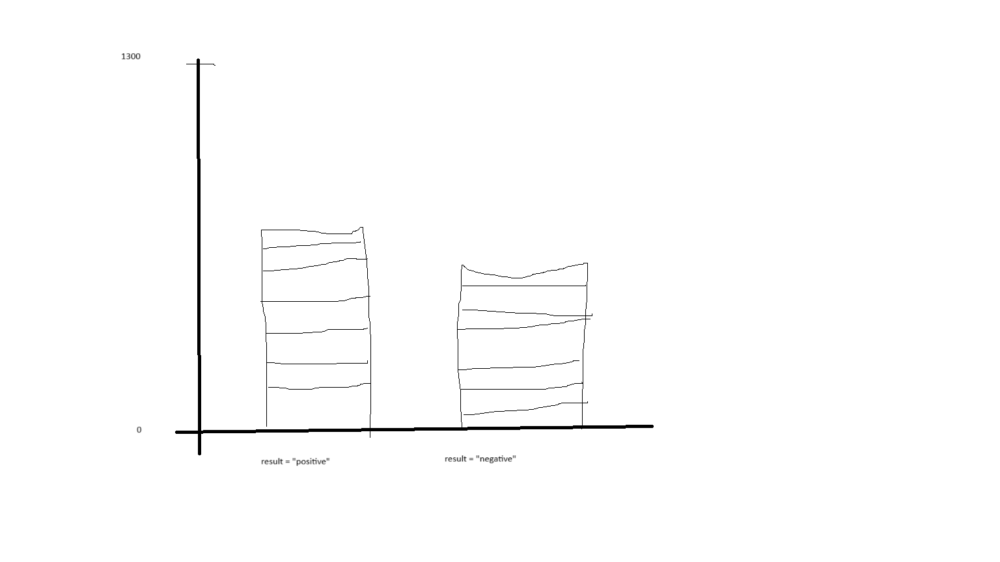

This visualization was created by Spencer Johnson for NEWM-N328
The dataset used is from Kaggle and contains cardiovascular data of hospital patients and whether or not they experienced a heart attack. The dataset can be found here.
This dataset has 9 attributes:| Age | age of patient |
| Gender | 0 for female, 1 for male |
| Heart rate | Measured in beats per minute |
| Systolic blood pressure | Pressure in the arteries during heart beat |
| Diastolic blood pressure | Pressure in the arteries between pumps |
| Blood sugar | Blood glucose level |
| CK-MB | Measured creatine kinase-MB level |
| Troponin | Measured troponin level |
| Result | Whether the patient had a heart attack (positive) or not (negative) |
Since the data had a large amount of numerical data, I wanted to consolidate some of it into metrics that were easy to understand.
Since most people are familiar with heart rate and systolic and diastolic blood pressure (the top and bottom number in a blood pressure test, respectively),
I was interested in categorizing those numbers into normal and high ranges.
I did the same with the less well-known categories (Blood sugar, CK-MB, and Troponin levels) as well.
| Column | Threshold | Source |
|---|---|---|
| Age | over 45 years | Mayo Clinic |
| Heart rate | over 100bpm | Mayo Clinic |
| Systolic blood pressure | over 120mm/Hg | Mayo Clinic |
| Diastolic blood pressure | over 80mm/Hg | Mayo Clinic |
| Blood sugar | over 125mg/dL | Cleveland Clinic |
| CK-MB | over 5ng/mL | Redcliffe Labs |
| Troponin | over 0.01ng/mL | Cleveland Clinic |
In my visualization, I initially thought the best way to show this information was with a two-column stacked bar chart.
The two columns would contain the total number of positive and negative instances, then the layers in each bar would represent the
number of patients that fell into that category. I felt like that would not accurately represent what I wanted, since the number on the y-axis could
lead people to believe that the number was a total, but it is not since some patients experienced multiple symptoms.

I decided on a donut chart because I felt it was a visually appealing way to show amounts of numbers and how they compare.
I also decided to use differing shades of red to indicate how strong of an indicator an abnormality was (darker red for the most common symptoms).
You will notice that the indicator with the darkest color is not the same between the genders!
I only used the patients that had experienced heart attacks, and I separated the visualization by gender.
The donut chart was selected because the perceived "total" is not a specific number, however percentages were calculated
from the total positive heart attack number in each gender. While this may be a bit confusing, I found the shapes for easily comparing between items
to be worth the compromise.
Which categories are the strongest indicators of a heart attack?
Are the numbers that people are most familiar with (heart rate, blood pressure, blood sugar) better indicators than the others others
for predicting heart attacks?
Do the most common indicators differ between Male and Female patients?
Across both male and female patients, an age over 45 years old is the most common for females (90%) and second strongest for males (84%) most common attribute.
High systolic blood pressure (pressure in the heart DURING a beat) occured in 53% of males and 52% of females, however high diastolic blood pressure was present in less than quarter of patients in each gender
and heart rates over resting were under 10% across genders
Less than half of males and females experienced high blood sugar, while a slightly larger percentage (49%) of females experienced high levels of CK-MB compared to males (41%)
High troponin levels was the most common or second most common abnormality for males and females (86% and 76% respectively)
Upon further research, this is due to the fact that troponin is a protein that is found after heart muscle is damaged.